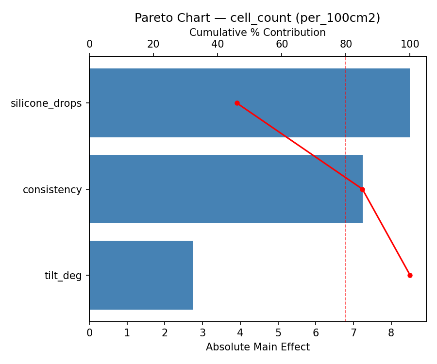
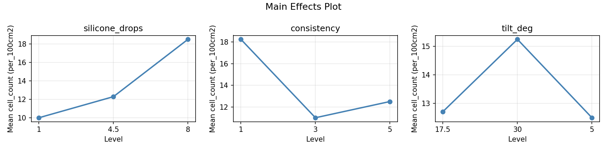
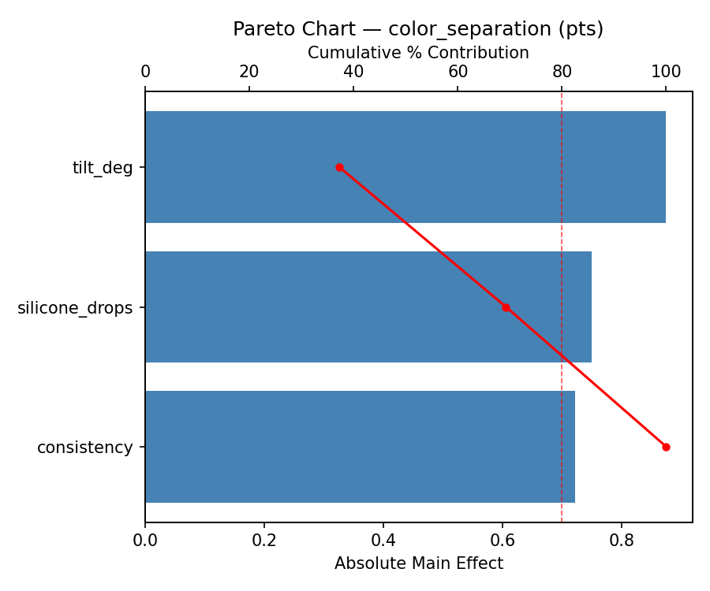
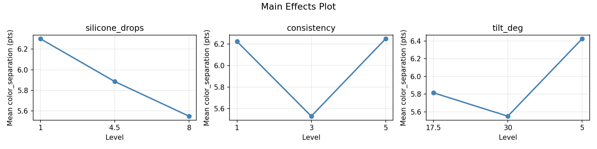
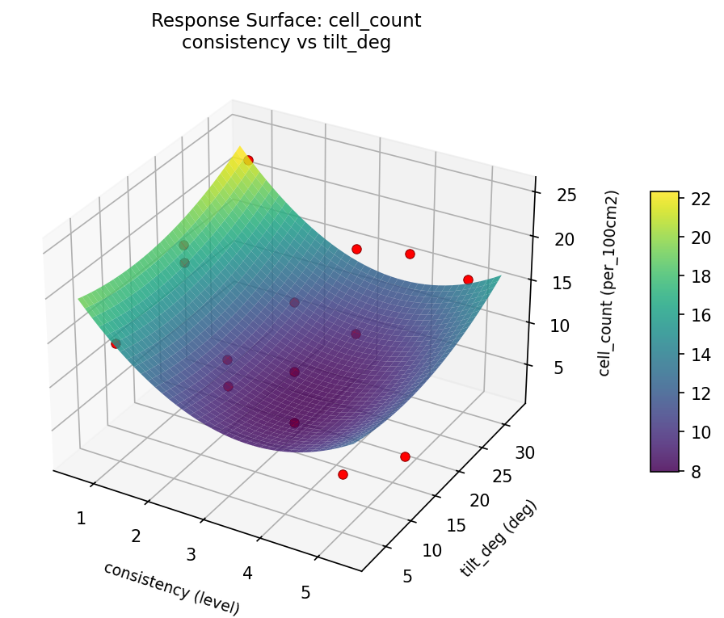
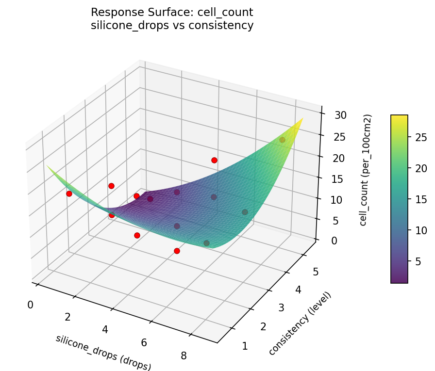
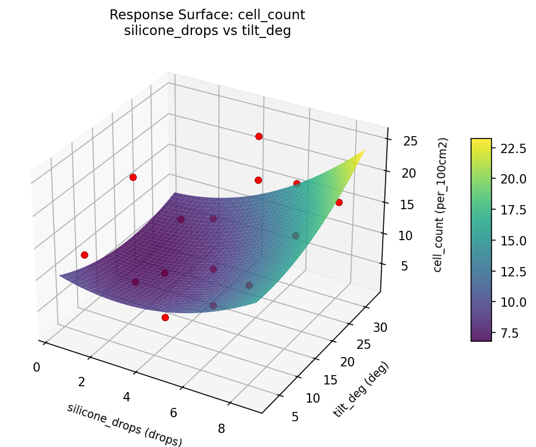
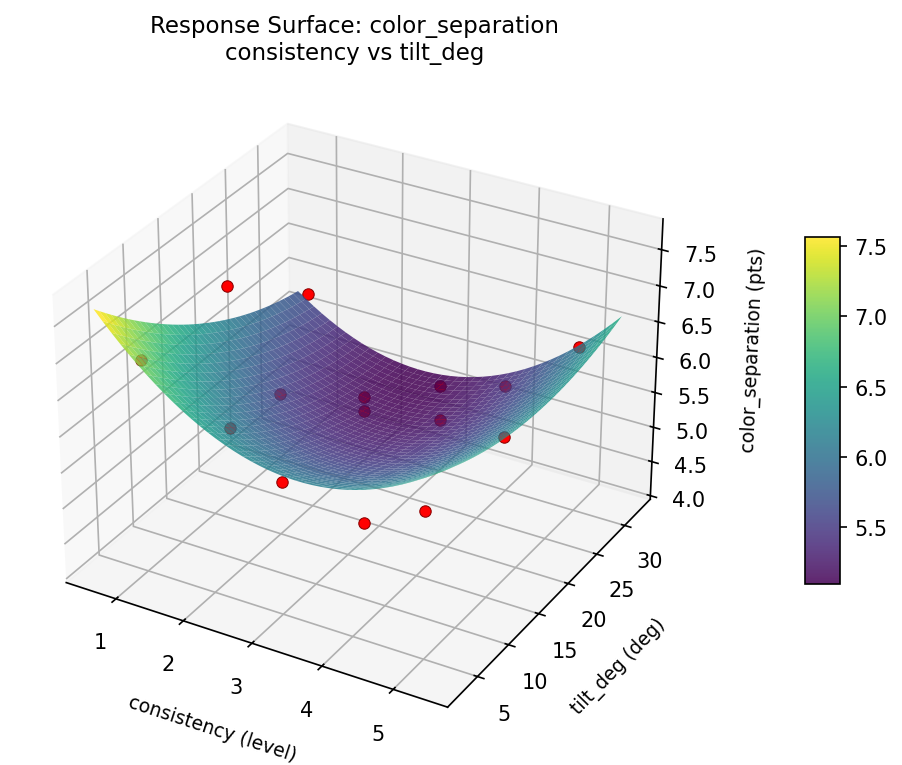
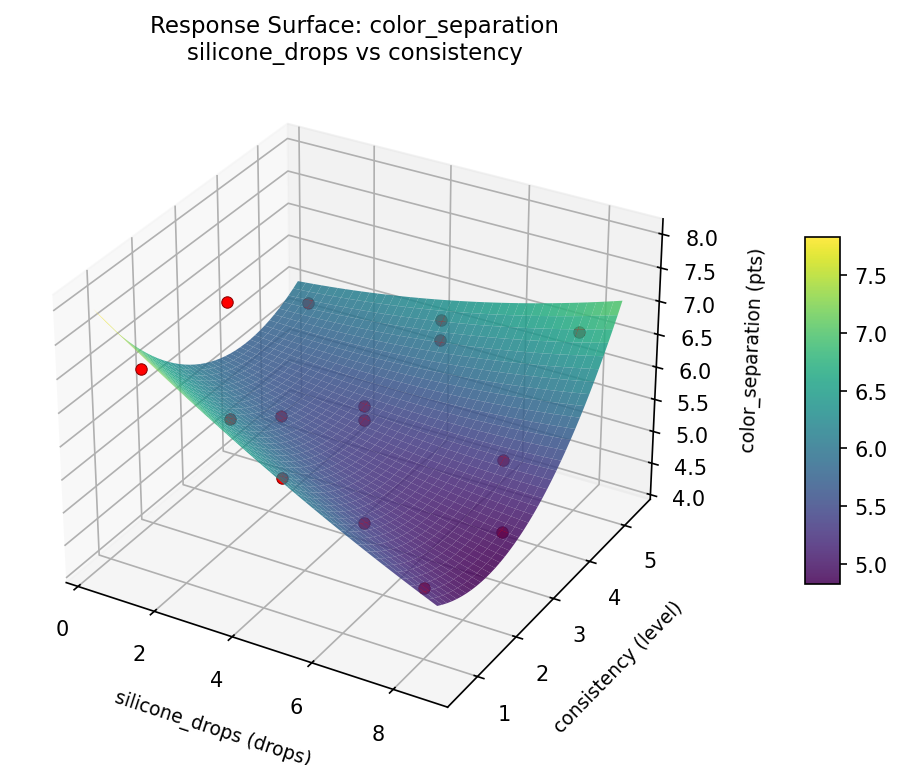
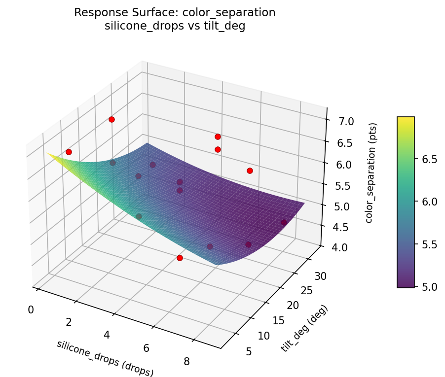

Experimental Setup
Factors
| Factor | Low | High | Unit |
|---|
silicone_drops | 1 | 8 | drops |
consistency | 1 | 5 | level |
tilt_deg | 5 | 30 | deg |
Fixed: medium = floetrol, base = titanium_white
Responses
| Response | Direction | Unit |
|---|
cell_count | ↑ maximize | per_100cm2 |
color_separation | ↑ maximize | pts |
Configuration
{
"metadata": {
"name": "Acrylic Pour Technique",
"description": "Box-Behnken design to maximize cell formation and color separation by tuning silicone amount, paint consistency, and tilt angle"
},
"factors": [
{
"name": "silicone_drops",
"levels": [
"1",
"8"
],
"type": "continuous",
"unit": "drops"
},
{
"name": "consistency",
"levels": [
"1",
"5"
],
"type": "continuous",
"unit": "level"
},
{
"name": "tilt_deg",
"levels": [
"5",
"30"
],
"type": "continuous",
"unit": "deg"
}
],
"fixed_factors": {
"medium": "floetrol",
"base": "titanium_white"
},
"responses": [
{
"name": "cell_count",
"optimize": "maximize",
"unit": "per_100cm2"
},
{
"name": "color_separation",
"optimize": "maximize",
"unit": "pts"
}
],
"settings": {
"operation": "box_behnken",
"test_script": "use_cases/283_acrylic_pour/sim.sh"
}
}
Experimental Matrix
The Box-Behnken Design produces 15 runs. Each row is one experiment with specific factor settings.
| Run | silicone_drops | consistency | tilt_deg |
|---|
| 1 | 4.5 | 1 | 5 |
| 2 | 4.5 | 3 | 17.5 |
| 3 | 8 | 3 | 30 |
| 4 | 8 | 3 | 5 |
| 5 | 4.5 | 3 | 17.5 |
| 6 | 4.5 | 3 | 17.5 |
| 7 | 1 | 3 | 30 |
| 8 | 8 | 1 | 17.5 |
| 9 | 4.5 | 1 | 30 |
| 10 | 8 | 5 | 17.5 |
| 11 | 1 | 3 | 5 |
| 12 | 4.5 | 5 | 30 |
| 13 | 1 | 1 | 17.5 |
| 14 | 1 | 5 | 17.5 |
| 15 | 4.5 | 5 | 5 |
Step-by-Step Workflow
1
Preview the design
$ python doe.py info --config use_cases/283_acrylic_pour/config.json
2
Generate the runner script
$ python doe.py generate --config use_cases/283_acrylic_pour/config.json \
--output use_cases/283_acrylic_pour/results/run.sh --seed 42
3
Execute the experiments
$ bash use_cases/283_acrylic_pour/results/run.sh
4
Analyze results
$ python doe.py analyze --config use_cases/283_acrylic_pour/config.json
5
Get optimization recommendations
$ python doe.py optimize --config use_cases/283_acrylic_pour/config.json
6
Generate the HTML report
$ python doe.py report --config use_cases/283_acrylic_pour/config.json \
--output use_cases/283_acrylic_pour/results/report.html
Features Exercised
| Feature | Value |
|---|
| Design type | box_behnken |
| Factor types | continuous (all 3) |
| Arg style | double-dash |
| Responses | 2 (cell_count ↑, color_separation ↑) |
| Total runs | 15 |
Analysis Results
Generated from actual experiment runs using the DOE Helper Tool.
Response: cell_count
Top factors: silicone_drops (45.9%), consistency (39.2%), tilt_deg (14.9%).
Pareto Chart

Main Effects Plot

Response: color_separation
Top factors: tilt_deg (37.3%), silicone_drops (32.0%), consistency (30.7%).
Pareto Chart

Main Effects Plot

Response Surface Plots
3D surfaces fitted with quadratic RSM. Red dots are observed data points.
cell count consistency vs tilt deg

cell count silicone drops vs consistency

cell count silicone drops vs tilt deg

color separation consistency vs tilt deg

color separation silicone drops vs consistency

color separation silicone drops vs tilt deg

Full Analysis Output
RSM surface: rsm_cell_count_silicone_drops_vs_consistency.png
RSM surface: rsm_cell_count_silicone_drops_vs_tilt_deg.png
RSM surface: rsm_cell_count_consistency_vs_tilt_deg.png
RSM surface: rsm_color_separation_silicone_drops_vs_consistency.png
RSM surface: rsm_color_separation_silicone_drops_vs_tilt_deg.png
RSM surface: rsm_color_separation_consistency_vs_tilt_deg.png
=== Main Effects: cell_count ===
Factor Effect Std Error % Contribution
--------------------------------------------------------------
silicone_drops 8.5000 1.8039 45.9%
consistency 7.2500 1.8039 39.2%
tilt_deg 2.7500 1.8039 14.9%
=== Summary Statistics: cell_count ===
silicone_drops:
Level N Mean Std Min Max
------------------------------------------------------------
1 4 10.0000 7.5277 2.0000 19.0000
4.5 7 12.2857 7.0407 2.0000 23.0000
8 4 18.5000 4.3589 16.0000 25.0000
consistency:
Level N Mean Std Min Max
------------------------------------------------------------
1 4 18.2500 3.7749 14.0000 23.0000
3 7 11.0000 5.6862 2.0000 16.0000
5 4 12.5000 10.1489 2.0000 25.0000
tilt_deg:
Level N Mean Std Min Max
------------------------------------------------------------
17.5 7 12.7143 8.8641 2.0000 25.0000
30 4 15.2500 6.9940 6.0000 23.0000
5 4 12.5000 3.8730 7.0000 16.0000
=== Main Effects: color_separation ===
Factor Effect Std Error % Contribution
--------------------------------------------------------------
tilt_deg 0.8750 0.2172 37.3%
silicone_drops 0.7500 0.2172 32.0%
consistency 0.7214 0.2172 30.7%
=== Summary Statistics: color_separation ===
silicone_drops:
Level N Mean Std Min Max
------------------------------------------------------------
1 4 6.3000 0.8718 5.2000 7.0000
4.5 7 5.8857 0.8255 4.2000 6.9000
8 4 5.5500 0.8963 4.7000 6.7000
consistency:
Level N Mean Std Min Max
------------------------------------------------------------
1 4 6.2250 0.9323 5.0000 7.0000
3 7 5.5286 0.9214 4.2000 7.0000
5 4 6.2500 0.3317 6.0000 6.7000
tilt_deg:
Level N Mean Std Min Max
------------------------------------------------------------
17.5 7 5.8143 0.9599 4.2000 7.0000
30 4 5.5500 0.7326 4.7000 6.3000
5 4 6.4250 0.6131 5.8000 7.0000
Pareto chart (cell_count): use_cases/283_acrylic_pour/results/analysis/pareto_cell_count.png
Pareto chart (color_separation): use_cases/283_acrylic_pour/results/analysis/pareto_color_separation.png
Main effects (cell_count): use_cases/283_acrylic_pour/results/analysis/main_effects_cell_count.png
Main effects (color_separation): use_cases/283_acrylic_pour/results/analysis/main_effects_color_separation.png
Optimization Recommendations
=== Optimization: cell_count ===
Direction: maximize
Best observed run: #3
silicone_drops = 4.5
consistency = 3
tilt_deg = 17.5
Value: 25.0
RSM Model (linear, R² = 0.0999, Adj R² = -0.1456):
Coefficients:
intercept +13.3333
silicone_drops -2.3750
consistency -1.0000
tilt_deg +1.3750
RSM Model (quadratic, R² = 0.8457, Adj R² = 0.5680):
Coefficients:
intercept +19.3333
silicone_drops -2.3750
consistency -1.0000
tilt_deg +1.3750
silicone_drops*consistency +1.2500
silicone_drops*tilt_deg -2.5000
consistency*tilt_deg -4.2500
silicone_drops^2 -1.1667
consistency^2 -10.4167
tilt_deg^2 +0.3333
Curvature analysis:
consistency coef=-10.4167 concave (has a maximum)
silicone_drops coef=-1.1667 concave (has a maximum)
tilt_deg coef=+0.3333 convex (has a minimum)
Notable interactions:
consistency*tilt_deg coef=-4.2500 (antagonistic)
silicone_drops*tilt_deg coef=-2.5000 (antagonistic)
silicone_drops*consistency coef=+1.2500 (synergistic)
Predicted optimum (from quadratic model):
silicone_drops = 1
consistency = 3
tilt_deg = 30
Predicted value: 24.7500
Model quality: Good fit — general trends are captured, some noise remains.
Factor importance:
1. consistency (effect: 11.4, contribution: 60.2%)
2. silicone_drops (effect: 4.8, contribution: 25.2%)
3. tilt_deg (effect: 2.8, contribution: 14.6%)
=== Optimization: color_separation ===
Direction: maximize
Best observed run: #9
silicone_drops = 4.5
consistency = 5
tilt_deg = 5
Value: 7.0
RSM Model (linear, R² = 0.1143, Adj R² = -0.1273):
Coefficients:
intercept +5.9067
silicone_drops -0.0875
consistency +0.3625
tilt_deg -0.0500
RSM Model (quadratic, R² = 0.6450, Adj R² = 0.0061):
Coefficients:
intercept +6.0000
silicone_drops -0.0875
consistency +0.3625
tilt_deg -0.0500
silicone_drops*consistency +0.1500
silicone_drops*tilt_deg -0.6250
consistency*tilt_deg -0.9250
silicone_drops^2 -0.2000
consistency^2 -0.0500
tilt_deg^2 +0.0750
Curvature analysis:
silicone_drops coef=-0.2000 concave (has a maximum)
tilt_deg coef=+0.0750 negligible curvature
consistency coef=-0.0500 negligible curvature
Notable interactions:
consistency*tilt_deg coef=-0.9250 (antagonistic)
silicone_drops*tilt_deg coef=-0.6250 (antagonistic)
Predicted optimum (from quadratic model):
silicone_drops = 4.5
consistency = 5
tilt_deg = 5
Predicted value: 7.3625
Model quality: Moderate fit — use predictions directionally, not precisely.
Factor importance:
1. consistency (effect: 0.7, contribution: 62.7%)
2. silicone_drops (effect: 0.3, contribution: 25.0%)
3. tilt_deg (effect: 0.1, contribution: 12.3%)